Chapter 29 Constraints and optimization
Under Construction
Content subject to revision.
Objectives
- Understand how to formula an optimization problem in terms of an objective function and (possibly) constraints.
- Be able to solve constrained optimization problems with two input variables and potentially several constraints.
- Be able to calculate the “shadow price” of a constraint.
- Understand the role played by the gradient of the objective function in solving optimization problems.
- Be able to translate constrained optimization problems into comparing gradients of the objective and constraint functions.
29.1 Optimization or design?
There is a calculus problem that has been part of the standard curriculum since Newton’s first work. It appears in Section III of the very first calculus textbook, published in 1696. (English: “Use of the calculus of differences to find the biggest and smallest values, or the reduction of questions De maximis & minimis.” )
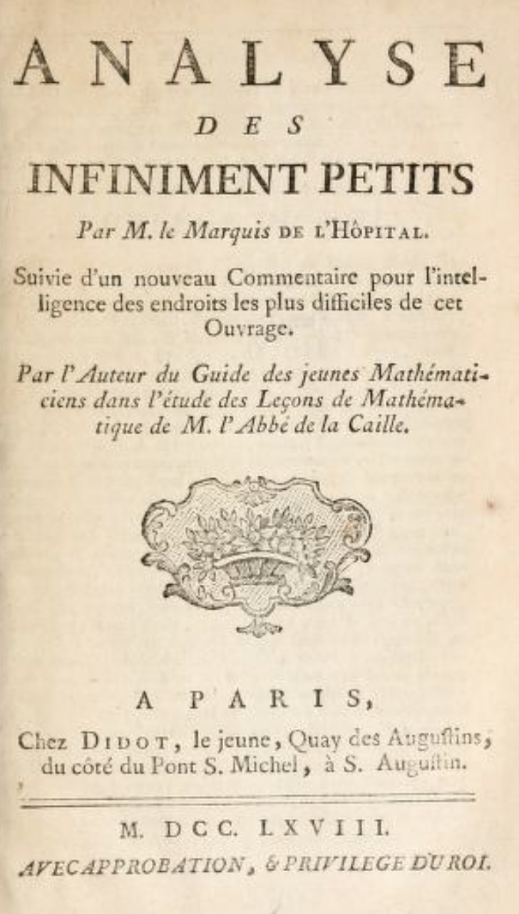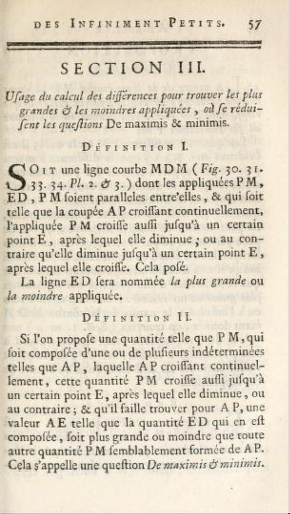
Source. This is the 1763 edition and is the personal copy of Founding Father and 2nd US President, John Adams.
The calculus perspective on optimization involves functions whose output is a scalar quantity: a single number. The problem of maximization is to find the input(s) to the function that produce the largest possible output from the function and similarly for minimization: that is, to find the argmax or argmin.
An analogous problem, suited for an elementary-school pupil, is to take a deck of cards, each with a number written on it, and find the card that has the largest number on it. In calculus, we substitute for the discrete domain of the deck of individual cards the continuous domain of the number line (or higher dimensional vector space).
With such a long textbook history, there is a large variety of textbook problems written to illustrate the application of optimization to “real-world” situations. For instance, a famous problem is to find the shape of a tin can (mathematically, a cylinder) that contains a given volume using the least amount of metal (mathematically, the smallest surface area).
It’s important to distinguish between the two distantly related problems of optimization and of design. Optimization is about finding the single best scalar output of a function. Design is about finding a configuration that suits the needs of a situation. Generally, design involves evaluating trade-offs among multiple objectives. In optimization, there is only a single objective.
Optimization is a far easier problem than design, but design is a far more widely applicable process. Regrettably, generations of students, having been given only the optimization hammer as a tool have been induced to treat design as a nail. The simple concept of “best” applies well to comparing scalar outputs of a function, but when the output is a vector or another function, one can only meaningfully speak of “best for a specific purpose.”
There are several strategies for transforming design problems into optimization problems, but inevitably something is lost in the process. One process is to consider only one dimension of the output. For example, in selecting the “best” electric car, you might reasonably look at the car’s range. But other criteria are important too, for instance the speed with which the batteries can be recharged or the cost of the vehicle. Throughout your professional life, you will likely encounter situations where the criteria for making a design decision have been reduced unnecessarily to low dimension. For instance, in the history of bomber design the criteria “bigger, higher, faster, farther” have been emphasized (example: B-1 bomber). Taking into consideration other criteria can considerably change the design, as with “stealth” (the B-2 bomber) or suitability to mission (the A-10 for close air support).
There are some situations, however, where there is a strong logical or economic basis for converting a vector/function output into a scalar. This day’s lesson is about two of those methods, one related particularly to finance and the other to outcomes that are uncertain. (Later on, we’ll examine mathematical techniques for dealing with genuine design-related problems.)
EXAMPLE FROM CHAPTER 25
Previously, in Section ??, we constructed a model of the effectiveness and tutoring on exam performance.
P <- makeFun(0.5*S + 0.5*T + 0.5*S*T - 0.5*S^2 ~ S & T)
contour_plot(P(S, T) ~ S & T, domain(S=0:1, T=0:1))Figure 29.1: The model constructed in Chapter 25 for exam performance \(P\) as a function of studying \(S\) and tutoring \(T\).
There are only so many hours in the day. There’s a constraint on the amount of time you have to study and to be tutored. A very basic model of this constraint is \(S + T = 1\). Since there are no units attached to \(S\) and \(T\) in the graph, we can’t be sure that the slope of the constraint is really \(-1\), but we know it will be negative. What are the implications of this constraint in terms of optimal choices for \(S\) and \(T\). [That you do some of each, not all of one and none of the other.]
- Given an algebraically simple constraint in the problem formulation, be able to use that constraint to reduce the dimension of an optimization problem. (Later we’ll use constraints in a different way when finding argmaxes and argmins.)
Consider these easy optimization problems:
- Build a road costing $10M per mile. How long should it be to minimize costs.
- Answer: Zero miles
- Choose the length of the front wall and side walls of a room to maximize the room area.
- Answer: Make the walls infinitely long.
- Build a spherical tank sliced in a way to have a flat bottom. The goal is to choose how far away from the sphere’s center to make the slice in order to maximize the volume.
- Answer: Don’t make any slice; it reduces the volume!
- Provide funding to a portfolio of public health interventions in order to maximize the number of lives saved.
- Answer: Spend an infinite amount on each intervention.
Each of these problems has an objective function—cost, room area, volume, lives saved. Each also has inputs to that objective function—road length, front and side wall lengths, slice position, funding for the different interventions.  4800
4800
In your career, you may occasionally encounter optimization problems like this, where the answer is obvious. All of them fall into the category of “more is better” (or “less is better”).
Nontrivial decisions generally involve resolving trade-offs: more is better up to a point and then it’s worse. Or, “more \(x\) is better” except that bigger \(x\) means smaller \(y\) and smaller \(y\) makes things worse. 4805
An example of a “bigger \(x\) means smaller \(y\)” is the cardboard box problem often found in calculus textbooks. You’re given a rectangular piece of cardboard as in the diagram. From the rectangle, you will cut out four squares in the corners (marked in yellow). This creates a central rectangle with four flaps. When we fold these up we get an open-topped box. 4810
) Length units are inches.](www/folded-box.png)
Figure 29.2: Creating a box by cutting corners out of a rectangle. (Image from Khan Academy video) Length units are inches.
The problem is to choose \(x\) to maximize the volume of the box. By making \(x\) large, we increase the height of the box. A taller box is a more voluminous box … at least if all other things are equal. But by making the box taller, we also make the bottom smaller because we still have the same amount of cardboard. 4815
The volume of the box will be height x length x width, or \[V = x (30-x) (20-x)\]
Question A What is the value of \(x\) and the corresponding \(V(x)\) that produces the maximum volume for the box? You can use the sandbox for your calculations (make sure your parentheses match the provided equation).
- \(x = 7.8 \text{in}, V = 2112.55 \text{in}^3\)︎✘
- \(x = 7.85 \text{in}, V = 2112.61 \text{in}^3\)Nice!
- \(x = 7.90 \text{in}, V = 2112.73 \text{in}^3\)︎✘
- \(x = 7.95 \text{in}, V = 2112.59 \text{in}^3\)︎✘
A somewhat richer problem is to find the edge length \(y\) square of cardboard that will produce the maximum volume when square corners of edge length \(x\) are cut out. Here, the volume is \(V = x(y-2x)(y-2x)\). 4820
As stated, maximum \(V\) is infinite. There’s no trade-off between \(x\), \(y\), and \(z\). If a problem is to have a finite argmax, we need to introduce a trade-off. Let’s suppose the trade-off is that the area of the initial piece of cardboard should be 600 square-inches, as in the previous problem. Now we have an objective function and a constraint \[\text{find argmax}\ \ V(x,y) = (y-2x)^2 x\ \text{subject to the constraint}\ y^2 = 600\ \text{in}^2\] 4825
One perfectly legitimate way to solve this problem is to use the constraint to find a value for \(y\), then substitute this value into the objective function, giving \[V(x) = (\sqrt{600} - 2x)^2 x\]
Question B Use the sandbox to find the optimal value of \(x\) in the square-bottomed box problem. Which of these is it?
\(x=4.083\)\(\heartsuit\ \) \(x=4.186\)︎✘ \(x=4.189\)︎✘ \(x=4.210\)︎✘
We’re now going to see a different way of using the constraint in the optimization problem. The idea is to graph the objective function without any constraint, then graph the constraint on top. The sandbox has the appropriate graphing commands for the square-bottomed box. 4830
V <- makeFun(x*(y - 2*x)^2 ~ x)
constraint <- makeFun(y^2 ~ x + y)
contour_plot(V(x, y) ~ x + y, domain(x=c(0,10), y=c(20,30))) %>%
gf_labs(title="Volume") %>%
contour_plot(constraint(x, y) ~ x + y,
filled=FALSE, contour_color = "orange3",
contours_at = 600)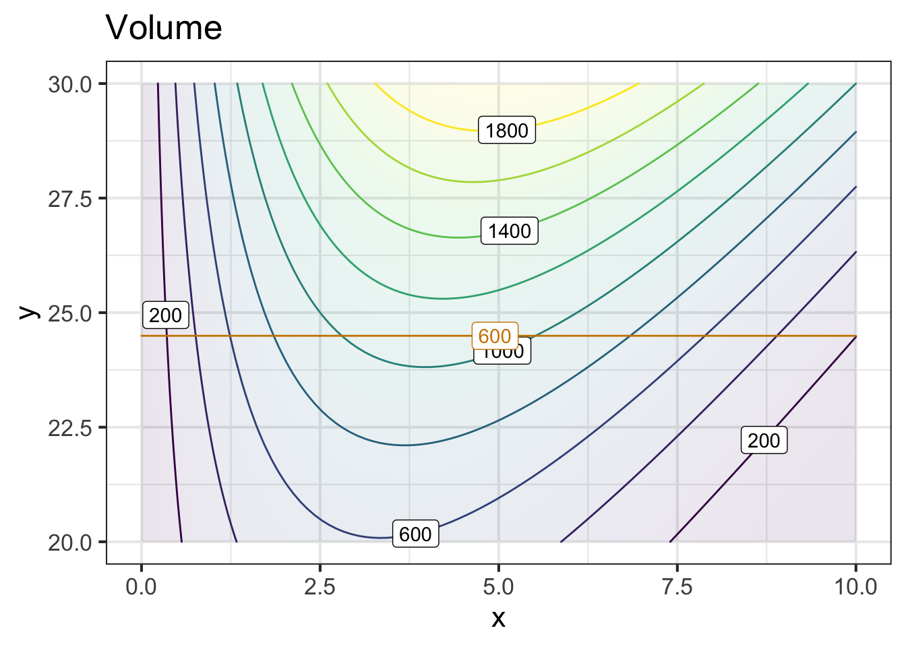
Here, the constraint is like a straight road going up and over the flank of a hill. To find the argmax “subject to the constraint,” imagine you are riding a bike along the red road. If you start on the left side of the graphic frame and go to the right you will be going uphill. As you approach the crest, the road will level out and then you’ll be riding downhill. 4835
Question C What is the relationship between the constraint (road) and the objective function (contours) that indicates you are on the crest?
- The road intersects a contour at right angles.︎✘ If so, you would be riding in the steepest direction. Remember, the gradient at each point is perpendicular to the contour at that point.
- There’s no fixed relationship between the road and the steepness of the objective function.︎✘ Yet, ask any bicyclist and they can easily tell you when they have reached the top point on a road.
- At the crest, the road is parallel to the nearest contour.︎✘ Almost, but remember that we draw only some of the contours and not others simply to prevent flooding the graph with ink.
- At the crest, the road is parallel to the contour passing through that point on the road.Excellent!
Question D At the optimal point on the road, what is the value of the objective function \(V(x,y)\)?
- 1000︎✘
- 1100Right! Right. The point is about half-way between the 1000 and 1200 contours.
- 1200︎✘
- 1400︎✘
Now you have see two completely equivalent approaches to using the constraint
- Solve the constraint for one variable in terms of the others.
- Use the constraint to restrict the domain of optimization to those values that satisfy the constraint. (We did this graphically, but it can be done other ways if a graph can’t be made, for instance, if there are more than two inputs to the objective function.) 4840
One reason to introduce (2) is to help you develop an intuition about the relationship between a constraint and the objective function. But it turns out that (2) lets us add features to optimization problems that can be important in practice. These are 4845
Add additional constraints to the problem.
For example, in the cardboard box problem we didn’t mention two constraints that are so obvious that we left it to common sense: \(x > 0\) and \(y > 0\). You can’t have negative cardboard.
Examine what happens if the constraint is changed in some way.
Suppose you were trying to convince the cardboard providers to allow a bit more cardboard for the box. How would the output of the objective function respond to this change?
Often, the effect of changing a constraint is described in terms of a ratio: the change in output of the objective function divided by the change in the constraint value. This is sometimes called a shadow price of the constraint. The synonym Lagrange multiplier is also widely used.
4850
The next two sections will deal with (a) and (b) in turn.
Exercise XX.XX: VHn3UG
Based on an extensive but fictive observation of activity and grades of college students, the model shown in the figure was constructed to give GPA as a function of the number of hours each weekday (Monday-Friday) spent studying and spent in social activity and play. (Activity during the weekend was not monitored.)

Several points in the graphic frame have been marked with red letters. Refer to these letters when answering the following questions.
Question A According to the model, what’s the optimal combination of Study and Play to achieve a high GPA?
F︎✘ G\(\heartsuit\ \) H︎✘ I︎✘
Question B Which of these letters marks a place on the graph where the partial derivative of GPA with respect to Play is positive?
B︎✘ C︎✘ K\(\heartsuit\ \) L︎✘
Question C Which if these ketters marks a place on the graph where the partial derivative of GPA with respect to Play is negative.
A\(\heartsuit\ \) F︎✘ H︎✘ K︎✘
Question D Where is the partial derivative with respect to Study is negative?
- Nowhere. \(\partial_{study} GPA()\) is always positive. More study = better grades.︎✘
- EExcellent!
- F︎✘
- L︎✘
Question E Study and Play are not the only activities possible. Sleep is important, too, as are meals, personal care, etc. In the study, students were observed who spent up to 22 hours per day in Study or Play. Presumably, such students crashed on the weekend.
Suppose you decide to budget 12 hours each weekday day in activities other than Study and Play. Which letter labels the constrained optimal mix (argmax) of Study and Play.
I︎✘ J︎✘ K\(\heartsuit\ \) L︎✘
Question F What is the “shadow price” of GPA with respect to the budget for a budget constraint of 12 hours? Give both an estimated numerical value as well as units.
- -0.8 hour/gradepoints︎✘
- 0.3 gradepoints/hourCorrect.
- +0.9 gradepoints/hour︎✘
- +1.3 hour/gradepoints︎✘
Question G Consider a student who budgets 22 hours per day for Study and Play. Which letter is closest to the constrained argmax with a 22-hour constraint?
A︎✘ B\(\heartsuit\ \) C︎✘ D︎✘
Question H What is the “shadow price” of GPA with respect to the budget constraint of 22 hours? Give the estimated numerical value.
- -0.5 gradepoints/hourCorrect.
- 0 gradepoints/hour︎✘
- +0.5 gradepoints/hour︎✘
- +1.0 gradepoints/hour︎✘
Question I Based on the shadow price from the previous question, which of these is the best advice to give the student (who seeks to maximize GPA)?
- You’re hopeless. There aren’t enough hours in the day for you to get a good GPA.︎✘
- You’ve got to squeeze out more effort studying. Give it your all!︎✘
- Play more, study less!︎✘
- Study less︎✘
- Study less, play less. Sleep!Nice!
Exercise XX.XX: Yb6tVr
We’d like to make a folded cardboard box in the most efficient way possible. As you know, cardboard boxes have four sides as well as eight flaps, four for the top and four for the bottom. The flaps are arranged to provide double coverage; you fold the flaps from one direction and then fold over them the flaps from the other direction.

The diagram depicts the box sides and flaps laid out on a flat piece of cardboard. The flaps are shaded with diagonal lines.
Suppose the height, width, and depth of the box are \(h\), \(w\), and \(d\) respectively. The box volume is easy:
\[V = h w d\] The area of cardboard consists of the the four sides and the eight flaps. Each component’s area is a product of the two edge lengths. For example, the box sides are either \(w h\) or \(d h\). The flaps, each of which extends half-way across the bottom or top have areas \(w d/2\).
Question A Which of these formulas gives the area of the cardboard making up the box?
- \(2 h(w + d) + 4 w d\)Good.
- \(4 h(w + d) + 2 w d\)︎✘
- \(2 h(w + d) + 8 w d\)︎✘
- \(4 h(w + d) + 4 w d\)︎✘
A common size for a box is 1.3 cubic feet. We’ll use feet as the units for \(w\), \(h\), and \(d\).
Question B The following formulas do not describe the area of the cardboard, but they are nonetheless formulas for something. Except one of them, which cannot be true. Which one?
- \(h(w + d)/d + w d^2/h\)︎✘
- \(h(w + d) + w h d\)Right! This formula is not dimensionally consistent
- \(h(w + d) + w^2 h/d\)︎✘
- \(h(w^2/d + d) + d^2\)︎✘
As \(w\), \(h\), or \(d\) are changed, the volume and surface area of the box are changed. Asking for the \(w\), \(h\), and \(d\) that minimize the surface area of the box is not a complete statement of a problem. The minimum surface area will be zero whenever two of the three dimensions have length zero. In other words, we can minimize the surface area by making a box that is no box at all!
To complete the problem statement we need something else. Here, that something is a constraint: We demand that the box have a volume of \(V = 1.3\) cubic feet.
Often, a constraint plays the role of a dimension reduction. With \(w\), \(h\), and \(d\), we have a 3-input optimization problem. But we can use the constraint equation to solve for one of the variables as a function of the other variables and the (known) volume. For instance, we can find \(h\) as \[h = V/d w\]
Question C Plug in the above expression for \(h\) into the formula for the surface area of cardboard. Which of the following is the resulting formula in terms of \(w\), \(d\), and \(V\)?
- \(2 V(w + d)/wd + 4 w d\)Correct.
- \(V(w + d)/w + V(w+d)/d + 4 w d\)︎✘
- \(2 w d (w + d)/V + 4 w d\)︎✘
- \(2 (w + d)/wd + 4 V w d\)︎✘
The following sandbox contains the formula for the surface area \(A(w, d, V)\) of a box of volume \(V\). The graphics command draw a contour plot of \(A()\) as a function of \(w\) and \(d\), holding \(V = 1.3\) cubic feet.
A <- makeFun(2*V*(w+d)/(w*d) + 4*w*d ~ w + d, V = 1.3)
dom <- domain(w = c(0.5, 1.5), d=c(0.5, 1.5))
contour_plot(A(w, d) ~ w + d, dom,
contours_at = NULL) %>%
gf_refine(coord_fixed()) # pipe to
# gradient_plot( A(w, d) ~ w + d, dom)When you draw the contour plot, you’ll see a broad area near the center inside the contour at area = 9.5. Towards the upper-right and lower-left corners of the plot frame are contours at higher levels of area.
Question D The spacing between the contours in the corners is tight, but there is no similarly spaced contour inside the region delimited by the contour at area=9.5. Why not?
- We didn’t ask for contours inside 9.5.︎✘ We didn’t ask, indeed. And we didn’t ask for any of the other contours specifically, yet they appear in the graph.
- The function shape inside the 9.5 contour is the top of a bowl, so it is pretty flat.︎✘ Almost right!
- The function shape inside the 9.5 contour is the bottom of a bowl, so it is pretty flat.Right!
- All the points inside the 9.5 contour are at exactly the same height.︎✘ The function \(C(w,d)\) is infinitely differentiable so it’s not possible to make a sudden shift from a sloped form to one that is dead flat.
Use the below sandbox and place contours at 10, 9.5, 9.4. You can do this by replacing the argument contours_at = NULL with this:
contours_at = c(10, 9.5, 9.4))Add more contours to build a fence tighter and tighter around the argmin. When the fenced region is tiny, you can read off the min from the contour label. (Remember, the “argmin” is the value of the inputs \(w\) and \(d\) at which the function is minimized. The “min” is the value of the function at the argmin.) But watch out as you do this. If you ask for a contour at a level that’s lower than the min, it will simply not be drawn. Or, more precisely, there are no inputs that produce an output that’s lower than the min. So you may have to change the interval between levels (e.g. 10, 9.5, 9.4, …) in order to home in on the argmin.
Question E The following are values for the output of the function where you might be able to draw a contour. Which one of the values is the smallest for which a contour actually appears?
9.1︎✘ 9.05︎✘ 9.01︎✘ 9.005\(\heartsuit\ \) 9.0005︎✘ 9︎✘
Question F From your contour plot, read off the values of \(w\) and \(d\) that produce the minimum surface area for a 1.3 cubic-foot box. What are they? (Hint: You may need to zoom in on the domain to get the precision needed to answer the question.)
- \(w \approx 0.9; d\approx 0.9\)Nice!
- \(w \approx 0.9; d\approx 0.6\)︎✘
- \(w \approx 0.5; d\approx 0.9\)︎✘
- \(w \approx 1.9; d\approx 0.9\)︎✘
It’s easy enough for a person to look at a contour plot and roughly locate the argmin. But this is not feasible if there are more than two inputs to the function being optimized. For such functions, another set of numerical techniques are used based on the gradient of the objective function. Remember that the gradient at any point is a vector that points in the uphill direction and whose length is proportional to the steepness of the slope. (Skiers, beware. In skiing what people call the gradient is the steepest downhill direction. This might account for all the mathematicians learning to ski who point their skis uphill in response to the ski instructor’s instruction!)
You can display the gradient on the plot of the area function by piping (remember %>%) the contour plot into the commented-out command in the sandbox. (Also, replace #pipe to with %>%.)
Question G Since the end of the term is coming, here’s a question that might be a good review for the final. Which of these describes the relationship between the gradient vector and the contours?
- On a contour the gradient vector is perpendicular (“orthogonal”) to the contour.Excellent!
- On a contour, the gradient vector has zero length.︎✘
- There is no definite relationship; it depends on the function itself.︎✘
- On a contour, the gradient vector has a length proportional to the contour level.︎✘
Question H Which of these best describes the gradient vector at the argmin?
- The gradient points due North.︎✘
- The length of the gradient vector is maximal.︎✘
- The length of the gradient vector is minimal.︎✘ You can give a better description than this.
- The length of the gradient vector is zero.Nice!
Many numerical optimization techniques are based on the idea like this: treating the field of gradient vectors as a flow field in a differential equation. Starting at some initial value, follow the gradient vectors (as you did in sketching the trajectory in a flow field). If seeking a maximum, the flow will be in the direction of the gradient. If seeking a minimum, the flow will be opposite the direction of the gradient. It’s not necessary to calculate the gradient everywhere; you just have to calculate it at the present point on your trajectory to know which way to go next.
Occasionally, particularly in textbook problems, the argmin or argmax is found algebraically. This still involves calculating the gradient as a function of the input variables. Then, find the inputs that make all the components of the gradient vector zero.
Question I Which of these formulas give the gradient vector of \(A(w, d)\)?
- \(\partial_w A = -2 \frac{V}{w^2}+ 4 d, \ \ \partial_d A = -2 \frac{V}{d^2} - 4 w\)Excellent!
- \(\partial_w A = -2 \frac{V}{d^2}+ 4 d, \ \ \partial_d A = -2 \frac{V}{w^2} - 4 w\)︎✘
- \(\partial_w A = -2 \frac{V}{w^2}+ 4 w, \ \ \partial_d A = -2 \frac{V}{d^2} - 4 d\)︎✘
- \(\partial_w A = -2 \frac{V}{d w}+ 4 w, \ \ \partial_d A = -2 \frac{V}{d w} - 4 d\)︎✘
Question J If the lengths \(w\), \(d\), \(h\) are measured in feet, what unit will \(\partial_w A\) be in?
- feetExcellent! Right. The area will be in square feet so the derivative of area with respect to \(w\) will be in square feet per foot, that is, feet.
- square feet︎✘
- cubic feet︎✘
- 1/feet︎✘
- dimensionless︎✘
For those of you who are pining for algebra problems, here you go.
Taking the gradient of \(A(w, d)\) (given in a previous question), set both components to zero, giving you two equations in the two variables \(w\) and \(d\). There’s also a \(V\) in the equations, but we’ve set up the problem saying that we already know \(V\). Numerically, we used \(V=1.3\) cubic-feet, but in the algebra solution we can just leave \(V\) as a symbol, giving general formulas for \(w\) and for \(d\) in terms of \(V\).
Question K Which of these is the correct formula for the optimal \(w^\star\) as a function of \(V\)? (Hint: You can weed out one of the choices by checking for dimensional consistency.)
- \(w^\star = \frac{\sqrt[3]{V}}{\sqrt[3]{2}}\)Good.
- \(w^\star = \frac{\sqrt[3]{V}}{\sqrt[3]{3}}\)︎✘
- \(w^\star = \frac{\sqrt[2]{V}}{\sqrt[2]{3}}\)︎✘
The solution for \(d^\star\) is the same as for \(w^\star\). (An experienced algebraist would have noticed that in the formula for area, you can swap inputs \(w\) and \(d\) without changing the output.)
Now compute the formula for the optimal value \(h^\star\). (Hint: Early in the section we gave a formula that involves \(V\), \(h\), \(w\), and \(d\).)
Question L Which of these is the correct formula for the optimal \(h^\star\) as a function of \(V\)?
- \(h^\star = 2^{2/3} \sqrt[3]{V}\)Nice!
- \(h^\star = 2^{1/3} \sqrt[3]{V}\)︎✘
- \(h^\star = 3^{2/3} \sqrt[3]{V}\)︎✘
- \(h^\star = 3^{1/3} \sqrt[3]{V}\)︎✘
It turns out that \(h^\star\) is somewhat larger than either \(w^\star\) or \(d^\star\); the optimal box has a square top and bottom, but the sides are not square.
Question M Which of these is an appropriate explanation for why \(h^\star\) is larger than \(w^\star\) or \(d^\star\)?
- People don’t like using boxes that are perfect cubes.︎✘ Nice joke! But let’s get real now. The objective was to minimize the amount of cardboard, not to make people happy.
- \(h\) multiplies both \(w\) and \(d\), but not vice versa, in the formula for surface area.︎✘ Not true. There are terms \(h w\) and \(h d\) in the area formula.
- The flaps need to get longer as \(h\) gets longer, so smaller \(h\) helps to minimize the amount of cardboard.︎✘
- The flap-length doesn’t depend on \(h\), only on \(w d\). So we can make \(h\) larger without contributing to the “wasted” area of the doubling over of flaps. The flaps get smaller as \(wd\) gets smaller, so larger \(h\) is preferred.Nice!
29.2 Constraints graphically
Turn this into an exercise? Where should it go?
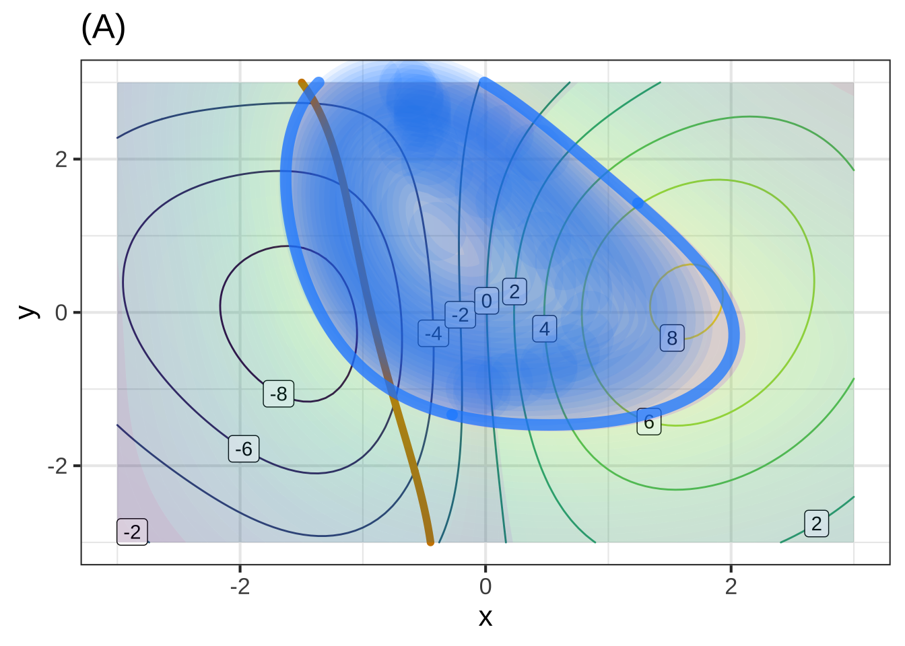
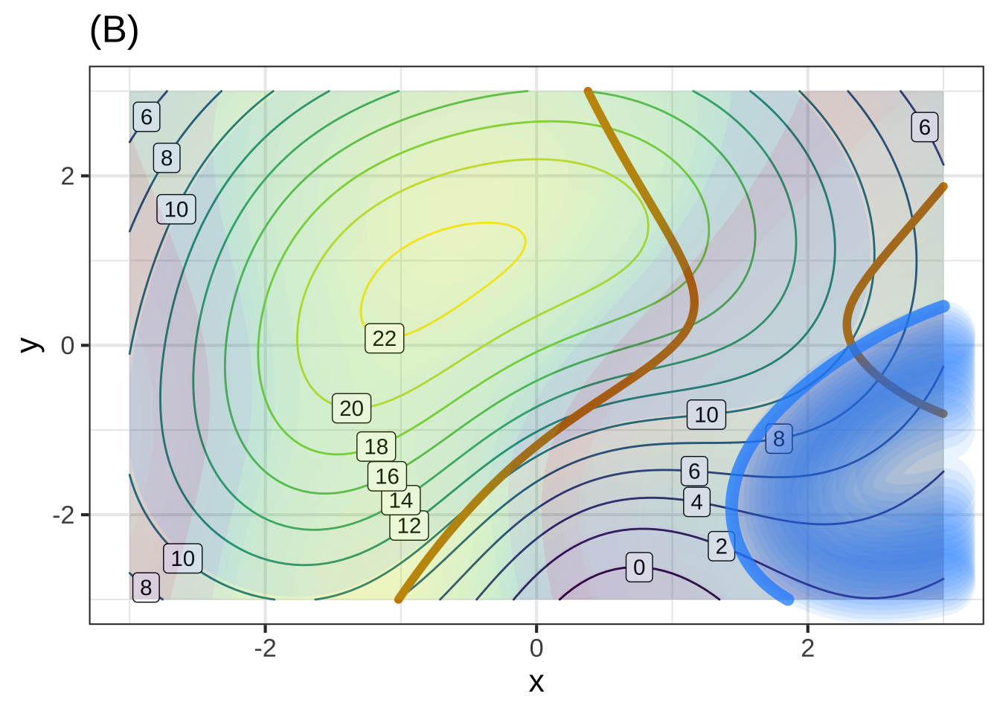
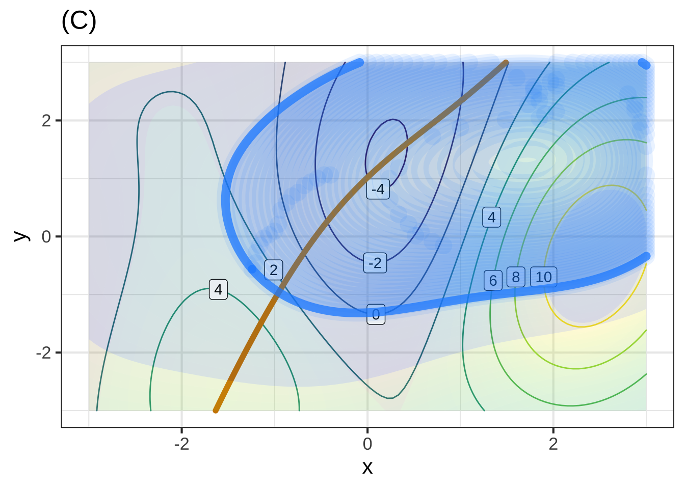
29.3 Multiple constraints
Economists are familiar with the concept of a production function. This relates the amount of various inputs used in production to the amount of the product. There are all sorts of inputs: materials of different sorts, labor, specialized machinery, and so on. We’ll look at just two types of inputs: labor and capital. As an example, consider clothing manufacture. A factory could get by with simple needles and a lot of labor, or (as is more typical) with sewing machines and less labor. Which mix is best depends on the relative costs of labor and equipment. 4855
There’s a standard model production function that’s based on a simple but meaningful observation: if both labor and capital are, say, doubled, the output should double as well. Just this principle leads to a formulation of the production function \(P(L, K)\) as a power-law function: \[P(L, K) \equiv b L^{a} K^{1-a}\] This is called the Cobb-Douglas production function and, whether realistic or not, will illustrate the principles at work. 4860
P <- makeFun(b*L^a*K^(1-a) ~ K + L, a = 0.33, b=100)
budget_constraint <- makeFun(K + L ~ K + L)
g_union <- makeFun(L ~ K + L)
g_invest <- makeFun(K/L ~ K + L)
contour_plot(P(K, L) ~ K + L, domain(K=c(0.01,1), L=c(0.01,1))) %>%
contour_plot(budget_constraint(K, L) ~ K + L,
filled=FALSE, contour_color = "orange3",
contours_at = c(1, 1.01)) %>%
# TAKE OUT THE FOLLOWING LINES BEFORE DEPLOYING
## TAKE OUT
### TAKE OUT
contour_plot(g_union(K, L) >= 0.5 ~ K + L, contour_at = 0.5,
contour_color = "dodgerblue", n_fill=3,
fill_alpha = 0.25) %>%
contour_plot(K/L > 2 ~ K + L, contour_at = 0.5,
contour_color = "green", n_fill=3,
fill_alpha = 0.25)## Scale for 'colour' is already present. Adding another scale for 'colour',
## which will replace the existing scale.## Scale for 'fill' is already present. Adding another scale for 'fill', which
## will replace the existing scale.## Scale for 'colour' is already present. Adding another scale for 'colour',
## which will replace the existing scale.## Scale for 'fill' is already present. Adding another scale for 'fill', which
## will replace the existing scale.## Scale for 'colour' is already present. Adding another scale for 'colour',
## which will replace the existing scale.## Scale for 'fill' is already present. Adding another scale for 'fill', which
## will replace the existing scale.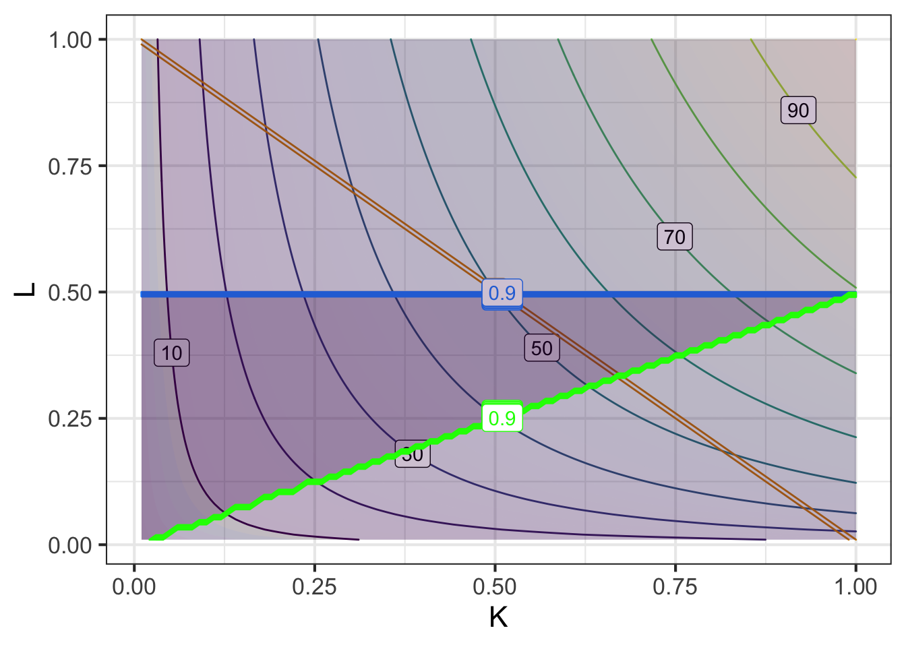
In the graph we’ve scaled L and K to have units of $1M and $1M is “all the money that’s available.” You can see that production output increases with both L and K, reaching 100 widgets in the upper right corner of the graph. 4865
What’s the optimal mix of labor and capital? As stated so far, we’re in a “more is better” situation. What creates the possibility for a finite argmax is a constraint: you can only spend the money that’s available. For instance, we could spend the budget only on labor or, alternatively, only on capital. The production output will be zero however. Better to spend on a mix of labor and capital. 4870
The constraint here is of a very common sort: a budget constraint. We have one unit of money to spend; we could spend 30% on labor and 70% on capital, or any other mixture. The budget function has a very simple form: \(g_{budget}(K, L) \equiv K + L\), the sum of the two expenditures. Our budget of one unit of money implies the constraint \(g_{budget}(K, L) = 1\). You can draw this on the graph by adding a contour plot of \(g_{budget}\), drawing the contour at level 1 (we’ll . 4875
Add the constraint contour to the graph made by the sandbox by uncommenting the appropriate lines in the sandbox.
Question N Given the budget constraint, what’s the largest level of production that’s possible? (Choose the closest answer.)
About 48 widgets︎✘ About 53 widgets\(\heartsuit\ \) About 61 widgets︎✘ About 67 widgets︎✘
Question O Reading from the graph, where’s the argmax of the production function subject to the constraint?
- About \(K=0.66, L=0.34\)Good.
- About \(K=0.34, L=0.66\)︎✘
- About \(K=0.5, L=0.4\)︎✘
- About \(K=0.4, L=0.6\)︎✘
The problem as stated involves just one constraint: \(g_{budget}(K, L) = 1\$\)M.
Now we’ll imagine situations where more constraints might come into play.
Scenario 1) In negotiating with the worker’s union, the company has promised to spend at least $500,000 on labor next year.
The constraint function here is \(g_{union}(K, L) = L\) and you need to operate such that $g_{union}(K, L) >= $ $500,000.
Scenario 2) The US Department of Commerce has an “Re-invest in American Manufacturing” program. This provides an incentive of $50,000 so long as you use capital intensively, say at a level of at least 2 parts capital to one part labor.
4880The constraint function here is \(g_{invest}(K, L) = K/L\) and, to qualify for the $50,000 incentive, you need to operate such that \(g_{invest} \geq 3\).
Both of these are inequality constraints. In contrast, the budget constraint is an equality contraint: It’s only satisfied when you are in a lower-dimensional part (the red budget line) of the K-L space. Inequality constraints can be satisfied at a continuum of points. 4885
Plotting the inequality constraints uses some special features of contour_plot(), so we’ll show you how to do it. For \(g_{union}()\), use the following in the sandbox
# Pipe the previous graphics into
contour_plot(g_union(K, L) >= 0.5 ~ K + L, contour_at = 0.5,
contour_color = "dodgerblue", n_fill=3,
fill_alpha = 0.25)When you plot \(g_{union}(K, L) > 0.4\) you will see a blue line at the frontier where the constraint is just barely satisfied. The dark region is where the constraint is not satisfied.
The feasible set is the points in \((K, L)\)-space which is simultaneously in a region that satisfies \(g_{union}(K, L) > 0.5\) as well as the budget constraint. So, along the red budget constraint but only that part in the light region that satisfied \(g_{union}(K,L) > 0.5\). 4890
The constrained argmax is the point in the feasible set that maximizes the production output. The constrained max the the value of the production function at the constrained argmax.
Question P What is the constrainted max that satisfies the budget constraint as well as $g_{union}(K, L) > 0.5?
- 46︎✘
- 50Nice! Right. At the intersection of the red and blue contours.
- 53︎✘
- 56︎✘ Constraints never point to a higher output than without the constraint.
Notice that the \(g_{union}(K, L) > 0.5\) constraint prevents being able to operate at the point we reached with just the budget constraint. The cost of the union constraint to the company is 3 widgets.
Now comment out the union constraint and let’s look at the investment incentive constraint. For \(g_{invest}()\), use
# Pipe the previous graphics into
contour_plot(K/L > 2 ~ K + L, contour_at = 0.5,
contour_color = "green", n_fill=3,
fill_alpha = 0.25)You’ll see that the feasible set is below the green contour, in the lower right part of the (K, L)-space. The cost of satisfying the investment constraint is practically zero: If the factory operates at the intersection of the red and green the output will still be 53 widgets. This is an example of a constraint that doesn’t change behavior. So far as this company is concerned, the Treasury Department is just giving away the incentive with no actual benefit. 4895
Question Q Is there any place where all three constraints—budget, union, investment—are all satisfied?
Yes︎✘ No\(\heartsuit\ \)
Exercise XX.XX: LiJkK2
In this exercise, you will work with an optimization problem. First, we’ll ask about a mathematical solution to the problem. Next, we’ll show that the mathematical solution is not necessarily the best real-world solution, because of multiple objectives in decision making. Then we’ll show you a real-world decision-making rubric that’s widely accepted, at least among people who listen to the whole story with an open mind.
The graph shows the estimated number of lives saved by three different health-care related interventions – A, B, C – as a function of the amount of money spent on each.

You have $1,000,000,000 to spend altogether on these interventions. Your policy alternatives are all the different combinations of spending on (A), (B), and (C) that add up to $1B (or less).
How should you split up the money among the interventions? For example, we could spend $125M on B, $125M on C, and $750M on A. This would save an estimated 346 lives. Can we do better?
Imagine that we use \(x\), \(y\) and \(z\) to denote expenditure, with \(x\) spent on intervention A, \(y\) on intervention B, and \(z\) on intervention C. Altogether, the budget is \(x + y + z = \$1B\).
Question A Suppose \(x = 750\), \(y = 125\), and \(z=125\), where units are millions of dollars. It’s suggested that reducing \(x\) by $1M in order to increase \(z\) by that amount will produce a better outcome in terms of the total number of lives saved. That is, move some money from intervention A to intervention C. Is this suggestion correct? Why or why not?
- Not correct. The number of lives saved by spending $750M on A is larger than the number that would be saved by spending that much on B or C.︎✘ We’re only talking about moving a small amount from A to C
- Not correct. We will want to move the money to B instead.︎✘ Be that as it may, the question was whether to move money from A to C.
- Correct. The derivative \(\partial_x A(x)\) at \(x=750\) is smaller than the derivative \(\partial_z C(z)\) at \(z=125\).Nice! Reducing \(x\) by a small amount will reduce the output \(A(x)\), but since \(\partial_z C(z=125)\) is greater, the loss in output due to a reduction in spending on A will be more than made up by an increase in output from spending more on C.
- Correct. We should spend equally on all three interventions. That is, set \(x = y = z = 333.33....\)︎✘ This is intuitively attractive, but still doesn’t address the question of whether the outcome would be improved by moving money from A to C.
A general principle is this: If spending a little more on one intervention increases the output more than the loss due to spending less on another intervention, the shift in funding is worthwhile.
Question B If you follow the above logic, you will continue to move money from A to C until it is no longer beneficial to do so. What will be the maximum amount of spending on A makes it not worthwhile to move additional money from A to C? (Choose the closest answer.)
$250M︎✘ $375M︎✘ \(500M<span class='mcanswer'>\) $ $625M︎✘
Question C Imagine that you have moved all the money from A to C that it’s worthwhile to do . Which of these statements is true at those values \(x_0\), \(z_0\)?
- \(\partial_x A(x_0) = \partial_z C(z_0)\)Right!
- \(A(x_0) = C(z_0)\)︎✘
- \(C(x_0) = A(z_0)\)︎✘
- \(\partial_x A(x_0) = 0\) and \(\partial_z C(z_0) = 0\).︎✘
We found it worthwhile to move expenditure from A to C to optimize the sum of their outputs and are operating at about \(x_0 = \$500M\) and \(z_0 = \$375M\), leaving \(y=\$125M\) to spend on intervention B. Is it worthwhile to move money from A or C to B or vice versa? But first, a simpler question.
Question D If we were going to move a small amount of money from A or C into B, would it be better to take the money from A or from C? Why?
- Take it from A, since we’re spending far more on A than C.︎✘
- Take it from C, since we’re already spending far less on C than on A.︎✘
- Take it from C. The slope \(\partial_z C(z_0)\) compared to \(\partial_x A(z_0)\) is such that a small reduction on spending on C has less impact than a small reduction in spending on A.Correct.
- Take it from A. The slope \(\partial_z C(z_0)\) compared to \(\partial_x A(z_0)\) is such that a small reduction on spending on A has less impact than a small reduction in spending on C.︎✘
Question E Right now in our process, we’re planning to spend $125M on B. Is it worthwhile to move money from C to B?
- No, the output of B larger than the output of C at $125M.︎✘
- Yes, move most of the money from C to B.︎✘
- Yes, but only move a little money from C to B.Good.
- No, move money from B to C.︎✘
Question F At the optimal amount of money \(y^\star\) spent on B and \(z^\star\) spent on C, which of these is true about the slopes \(\partial_y B(y^\star)\) and \(\partial_z C(z^\star)\)?
- There’s not any fixed relationship. They are what they are.︎✘
- The two slopes are equal.Excellent!
- The slope of B is greater than the slope of C.︎✘
- The slope of C is greater than the slope of B.︎✘
Question G Is it more proper to say the “slope \(\partial_z C(z^\star)\)” rather than the “derivative \(\partial_z C(z^\star)\)?” (This is a general review problem for the course, not something specifically about optimization.)
- Yes. A derivative is a function while a slope is a quantity.Nice!
- No. Slope and derivative are the same thing.︎✘ No, the derivative is a function. When you evaluate that function at a particular value of \(z\) (say, \(z^\star\)) the output will be the slope of the original function at that value of \(z\).
- Yes. “Derivative” sounds fancier than “slope”.︎✘ It’s not a matter of fancy, it’s a matter of being precise.
- No. Slopes measure steepness from right to left, while derivatives give steepness from left to right.︎✘ Where did that come from. The convention for the sign of a slope is always the direction left to right.
Background: The graphs are fictitious, but let’s pretend they are:
- A Surgical treatment of congenital heart defects in newborns.
- B Treatment for hemophilia.
- C Memory-care for people with Alzheimers.
Notice that the people being affected are in different, non-overlapping groups. So moving funding from one group to another is effectively “robbing Peter to pay Paul.” If you, as a decision maker inherited a situation where \(x = \$750M\), \(y=\$125M\), and \(z=\$125M\), changing the expenditures would make one group better off (no matter how you did it!) and would make another group worse off. And imagine the headlines if you moved money from A to C or B: “Government slashes funding for newborns!”. Or perhaps an editorial: “We need to find a way to increase funding for hemophilia without cutting other life-saving spending.” This raises an important question: Is it ever worthwhile to forgo spending to save lives? How would anyone decide which lives are worth saving? Most people are uncomfortable with such questions. Yet the decisions taken by leaders, whatever they be, inevitably have a mathematically equivalent formulation which translates to the value of life.
Probably, most people would decline to make a decision comparing two lives, for instance, saving a 10-year old versus saving a 90-year old. But it is not always possible to escape such trade-offs and the people who need to take the decision need guidance about what to do. In an open society, we expect such decisions to be backed by good rationale and so we have to develop means for distinguishing between better and worse rationales.
One example comes from epidemiology and the concept of a “quality-adjusted life year” (QALY). A QALY is a measure of duration of life adjusted for the health condition of the person — a year of a person in good health is 1 QALY, but a year in a person in very poor health is less than 1 QALY.
QALYs do not solve the problem of optimizing health-related outcomes. They are an imperfect means of dealing with an impossible problem. Sometimes that is the best we can do.
Exercise XX.XX: h05BsT
You are a member of a health-care oversight committee that allocates funds for investment in health-care facilities. The committee has two proposal before it and needs to decide how best to spend the available $50M budget:
- Proposal A: Expansion of the pediatric organ transplant unit.
- Proposal B: Creation of a new rehabilitation center for traumatic injury patients.
Experts have evaluated each proposal in terms of different cost options and the impact that each will have on health outcomes. Following a standard epidemiological method, the impact is estimated in terms of “Quality Adjusted Life-Years” (QALY), a measure that combines the number of people affected, the number of years of prolonged life, and the improvement in quality of life for those treated.
The expert estimates are available in the data frame QALY_impact:
QALY Impact of the Proposals
QALY_impact## # A tibble: 6 × 3
## expend A B
## <dbl> <dbl> <dbl>
## 1 0 0 0
## 2 10 40 30
## 3 20 100 80
## 4 30 150 140
## 5 40 170 160
## 6 50 180 175Such estimates from experts should be taken with a grain of salt, but they are often the best information you have to inform a model.
You can turn the expert’s opinions into functions by using splines. In this case, there is good reason to think that output will increase monotonically with expenditure, so a monotonic spline is a good choice. The functions were created using these commands and are already available in your sandboxes:
fA <- spliner( A ~ expend, data=QALY_impact, monotonic=TRUE)
fB <- spliner( B ~ expend, data=QALY_impact, monotonic=TRUE)The problem is to find the best values for expenditures on Proposal A and B — call these expenditures \(x_A\) and \(x_B\) – given constraint that total expenditure is \(x_A + x_B = 50\).
A simple approach is to plot out the total benefit as a function of expenditures on each of A and B:
overall <- makeFun( fA(xA) + fB(xB) ~ xA + xB)
g_budget <- makeFun(xA + xB ~ xA + xB)
contour_plot(overall(xA, xB) ~ xA + xB,
domain(xA=range(0,50), xB=range(0,50))) %>%
contour_plot(g_budget(xA, xB) ~ xA + xB, filled=FALSE,
contours_at=NULL, contour_color="orange3", alpha=0.5)How can you confirm that the red contours in the plot genuinely represent the budget constraint at the indicated level?
Question A What’s the largest number of QALYs that can be produced from combining the two proposals with a total budget of $50M?
120︎✘ 160︎✘ 180︎✘ 240\(\heartsuit\ \) 300︎✘ 340︎✘ 350︎✘ 360︎✘
Question B What is the location of the argmax in the previous graph?
- \((A = 0, B = 50)\)︎✘
- \((A = 6, B = 44)\)︎✘
- \((A = 12, B = 38)\)︎✘
- \((A = 22, B = 28)\)Nice!
- \((A = 34, B = 16)\)︎✘
- \((A = 41, B = 9)\)︎✘
- \((A = 50, B = 0)\)︎✘
Another way to look at the problem is to find the total QALY outcome as a function of the amount \(x_A\), recognizing that once \(x_A\) is set, the remaining money will go to option B, so \(x_B = 50-x_A\). The following sandbox makes the plot.
slice_plot( fA(xA) + fB(50-xA) ~xA, domain(xA = c(0,50)))Changing the Budget
A broader social question is whether the budget is being set at an appropriate level. One way to examine this is to look at how the QALY outcome changes as the budget changes.
For this, we’re going to find the set of non-dominated solutions, that is, all the values of \(x_A\) and \(x_B\) at which the derivatives \(\partial_{x_A} f_A()\) and \(\partial_{x_B} f_B()\) are equal.
The following sandbox shows the difference between those two derivatives along with a bunch of different constraint paths.
dfA = D(fA(xA)~xA)
dfB = D(fB(xB)~xB)
contour_plot( dfA(xA) - dfB(xB) ~ xA&xB,
domain(xA=range(0,50), xB=range(0,50)),
contours_at = c(-2, -4, 0, 4, 2), skip=0) %>%
contour_plot(xA + xB ~ xA + xB, contour_color="orange3", skip=0)Yet another constraint!
Question C The American Association of Allergy Activists (AAAA) has lobbied Congress to mandate that, of the 50 units of available funds, funding for A must be \(x_A \geq 40\). How much would this constraint reduce the overall output for the two interventions combined? (Remember, if you’re spending, say, 45 on A, you can’t spend more than the remaining 5 on B.) The challenge for you in answering this question is to pick the appropriate one of the above graphs. Once you have done that, the answer is evident.
- No reduction at all.︎✘
- About 10-20 QALYs.︎✘
- About 40-60 QALYs.Excellent!
- About 100-120 QALYs.︎✘
- It would actually increase the output.︎✘
29.4 Changing constraints
Imagine now that you are the factory manager and are briefing your company’s Board of Directors about the planned production for next year. You say, “Production next year will be 53 widgets.” A gruff member of the Board insists this isn’t adequate, claiming, “We have a market for more widgets than that! And they sell for $10,000 each!” 4900
Spend a minute to think what would have to change in order to increase production beyond 53 widgets. Then think about how you would decide whether $10,000 per widget is a good reason to increase production. 4905
Now let’s do it mathematically. A sensible response to the gruff member of the Board is, “We’ll need to increase the production budget. Let’s see if that’s worthwhile.”
Here’s a sandbox to graph out a constraint along with the Cobb-Douglas production function.
P <- makeFun(b*L^a*K^(1-a) ~ K + L, a = 0.33, b=100)
g_budget <- makeFun(K + L ~ K + L)
contour_plot(P(K, L) ~ K + L, domain(K=c(.6,.7), L=c(.3,.4))) %>%
contour_plot(g_budget(K, L) ~ K + L,
filled=FALSE, contour_color = "orange3",
## GET RID OF THE 1.01 contour before deploying
contours_at = c(1, 1.01))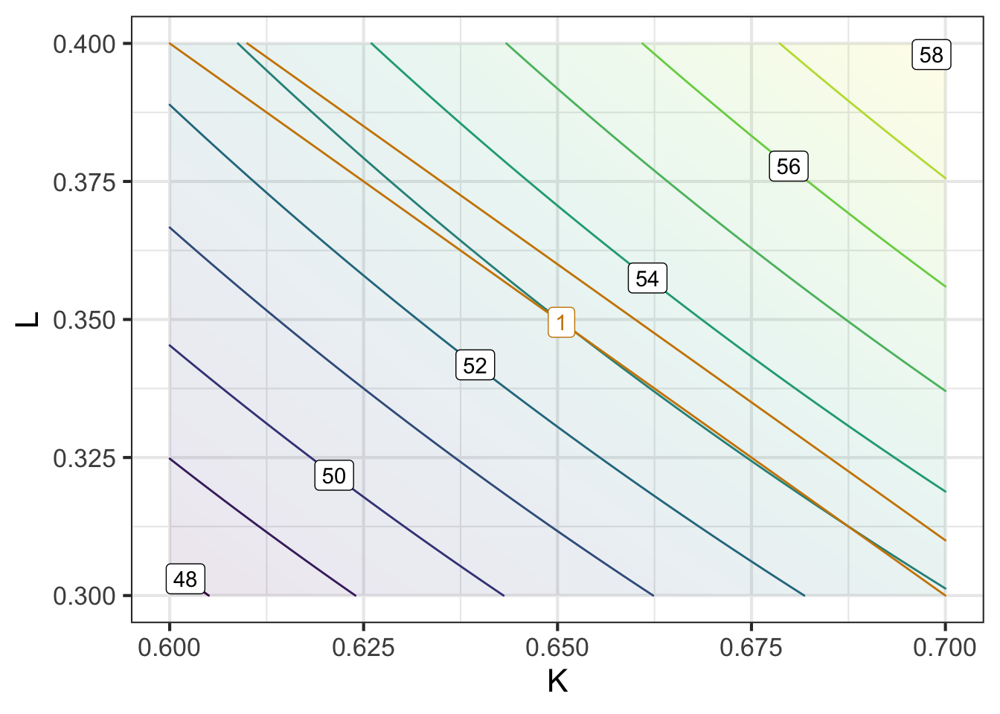
This is exactly the same graph as in the previous section but this time zoomed in around the argmax. Notice that the production function contours, which were curved in the previous section, now are practically straight lines. Yet another example of the principle in calculus that if you look closely enough around a point on a curve, the curve will seem like a straight line. 4910
Question D Maybe we were mistaken in claiming that the graph made by the code in the sandbox zooms in around the argmax. Which of these tests would allow you to determine if indeed the argmax is in the graphics frame?
- The constraint contour is tangent to a production function contour.Nice!
- The constraint contour crosses a production function contour.︎✘ If so, then the path of the constraint function is heading either uphill or downhill, not level.
- The constraint contour appears in the graphics frame.︎✘ But this doesn’t rule out the frame being somewhere other than around the argmax.
- The production 53 contour appears in the graphics frame.︎✘ But there are many places away from the argmax where the 53 contour appears.
Here’s a process for determining if increasing the budget is worthwhile. It draws on information about the production function and the value of an additional widget.
- Add a new constraint contour at a somewhat bigger budget, say $1.01M. You can do this by changing the argument
contours_at = 1to becontours_at = c(1, 1.01). - Calculate the production output at the new budget level.
- Find out how much the production output increased from the original budget level to the new $1.01M budget level.
- Divide the increase in the budget by the change in production (3). This is the shadow price/Lagrange multiplier. It has units of dollars/widget.
Question E What’s the optimal production level when the budget is $1.01M?
53.1︎✘ 53.5\(\heartsuit\ \) 54︎✘ 55.5︎✘
Question F What’s the shadow price of producing another widget
$1000 per widget︎✘ $5000 per widget︎✘ $15,000 per widget︎✘ \(20,000 per widget<span class='mcanswer'>\) $
Question G Is it worthwhile to increase the production budget?
- Yes︎✘ So you’re willing to spend $20,000 to produce something that sells for $10,000?
- NoNice! Right. Who would spend $20,000 to produce something that sells for $10,000?
- Not enough information is available︎✘ Really? You know the cost and the benefit. That’s enough to make a decision.
29.5 Incommensurate objectives
Just as the word “cooperate” means to “work together” (“co” + “operate”), the word “commensurate” means to “measure together” or to measure in the same way. Since you already know about different units and dimensions, an example in that domain can make the meaning concrete. An inch and a mile are commensurate quantities. Obviously, an inch and a mile are not equal, but you can compare them in an objective way. (An inch is 0.000015783 miles.) Similarly, a litre and a gallon are commensurate, but having the dimension L3, neither is commensurate with a quantity of dimension L. 4915
A large number of decisions involve money in some way. It’s routine to decide whether a purchase is “worth the money.” But we do this by applying a judgment that is subjective, e.g. is it worthwhile to buy the more expensive chocolate? The decision involves comparing two incommensurate things: the money vs the good feelings that come from eating or giving a fine treat. 4920
That things are incommensurate does not at all mean that you can’t make decisions that put one against the other, just that there is no ready, objective means to do the comparison.
As an example of how incommensurability can frustrate decision making … In the 1990s the Federal Aviation Administration (FAA) was considering a policy of requiring safety seats for infants and children on flying. (For infants, the standard was “babe in arms”: the infant could be carried on the plane and held by the caretaker, without needing a separate seat for the baby.) As you might expect, the issue was the extra costs for parents versus the increased safety of the child safety seat. The American College of Pediatrics lobbied in favor of the safety seats, travel agents lobbied against the requirement. The FAA could not reach a decision. That’s somewhat surprising because the FAA necessarily makes decisions that compare money and safety, for instance in the requirements for a passenger evacuation system or life rafts. I guess nobody is objective about babies! 4925
After a decade or so, the FAA decided not to require the safety seats. What broke the log-jam of incommensurability was a study done of how parents would respond to the increase in cost of flying with babies. It was determined that the increased cost would push parents to drive rather than fly for short- or mid-distance trips. Driving is much more dangerous than commercial aviation and so the expected number of injuries or deaths would be larger were the safety-seat requirement instituted than if not. In other words, the comparison of lives to lives (driving risk versus flying risk) was easy, but the comparison of baby lives to money was impossible. 4930
Over the next few classes, you will learn some mathematical techniques for decision-making in the face of incommensurate objectives (e.g. save money versus save lives). It’s important to note that there is no mathematical solution to the problem. Rather, mathematics can provide tools to clarify the trade-offs and, in much the same way as the resolution of the FAA’s policy problem, can sometimes offer a sensible way forward. 4935
It’s worth mentioning some of the common, non-mathematical ways that people deal with incommensurates. I’ll call these “heuristics.” The Wikipedia definition of “heuristic” is pretty good: 4940
[A]ny approach to problem solving … that employs a practical method that is not guaranteed to be optimal, perfect, or rational, but is nevertheless sufficient for reaching an immediate, short-term goal or approximation. Where finding an optimal solution is impossible or impractical, heuristic methods can be used to speed up the process of finding a satisfactory solution. Heuristics can be mental shortcuts that ease the cognitive load of making a decision.
A very common heuristic is to simply deny that any trade-off exists. This is seen most clearly in the dispute about climate change. The trade-off here is the cost of climate remediation policies (such as a carbon tax) versus the disruption and dislocation caused by the changing climate. One one side of the debate are people who deny that climate change is happening or that it is caused by human activity that can be mitigated. On the other side of the debate are people who insist that the economic changes called for will not only reduce climate-change harm but will positively affect the economy, create jobs, etc. The rest of us are in the middle, recognizing both sides of the problem. 4950
Another heuristic is to play the trump cards of morality and human rights. Once someone claims the the issue is fundamentally one of morality, it’s hard to have conversation about the trade-offs involved. (If everyone agreed about morality, it would be easier. But one person’s divine truth is another person’s opinion.) In the US, the debate about health-care policy is not a measured discussion of how available resources should be distributed to best effect but a competition between perceived moral or ethical stances: “the government has no business making medical decisions for me” versus “affordable health care is a human right.” 4955
It is not our place in CalcZ to enter into deep conversation about political or moral philosophy. Rather, by introducing the concepts of incommensurability and heuristic, we intend to guide the mathematical discussion toward a framework for making impossible decisions in a thoughtful and responsible manner. 4960
29.6 Multiple objectives
It often happens that decisions involve multiple simultaneous objectives. In one context or another, each of these considerations can play a role in decision making:
- safety
- cost
- human life
- animal welfare
- collateral damage
- public or political reaction
This is by no means an exclusive list.
In specialized domains more specific competing objectives are often part of the design goal. For instance, consider aircraft design:
- range
- payload or cargo capacity
- short take-off and landing
- maneuverability
- mission suitability
- multi-mission capability
- maintenability
- stealth
Over the next few lessons, we’re going to introduce concepts that are important to effective thinking about designing with multiple objectives as well as mathematical tools that help in balancing conflicting objectives. As you will see, there is no single “correct” or “best” solution to such problems. Indeed, there is a mathematical theorem about when there cannot be a best solution. However—and this may seem contractictory at first—some solutions are better than others. Mathematics also provides a framework for a systematic and documentable process which provides a role for the inevitable elements of human, subjective values. 4965
First, we’ll cover elementary mathematical principles that demonstrate both that there is no single “best” solution while yet allowing some solutions to be better than others. Important vocabulary here includes “incommensuate”, dominating and non-dominating solutions(along with pareto optimality), decision frontier, and social utility function. 4970
Second, we’ll briefly discuss some heuristics that people and groups often use, without necessarily realizing it, in solving multi-objective optimization problems. Awareness of such heuristics helps in identifying (often unstated) objectives implicit in the decision and enables you, by making them explicit, to clarify the problem and potentially open it up to useful discussion and negotiation. 4975
Later, we’ll use the mathematics of constraints and constraint functions to support a process of rational decision making that nonetheless leaves space for subjectivity in valuing outcomes.
MAYBE TRANSCLUDE THIS INTO THE TEXT?
29.7 Multi-objective decision making
Recall that we described a strategy for working with incommensurate objectives, that is, objectives such as “minimize money spent” and “maximize lives saved” that have no generally agreed common scale on which they can be compared. (“Mensurate” comes from the Latin for “measure.” “Commensurate” means measured on the same scale.) We call that strategy multi-objective optimization. This is by no means a magical way of pulling ethical values or human preferences out of the universe. It is instead a mathematical framework for setting up the task to quantify correctly the tradeoffs between objectives. What use one makes of this information is entirely a matter for human decision making. 4980
The setting for multi-objective optimization is this:
- You have a set of policy alternatives from amongst which you want to choose the “best.” Sometimes these policy alternatives are discrete, e.g. whether to buy something or not. In this calculus course, we emphasize continuous policy alternatives, those that are represented by one or more numbers. Examples: How much money to spend on each of several modes of providing health care; How to set the length and diameter of a cylindrical tank.
- You have a set of objective functions, each corresponding to one of the incommensurate objectives. Each objective function takes any of the policy alternatives as input and produces an output on its own scale. Examples: Lived saved; Money spent; Cardboard box volume; Area of cardboard used to create the box. 4985
The process is this:
- You, the decision maker, select one of the objective functions to be the objective function. Mathematically, it doesn’t matter which one.
- The other objective functions become constraint functions. You, the decision maker, select a level for each constraint. Examples: The money available for health care (budget constraint); The volume that the cardboard box must contain.
- Find the argmax of the objective function in (i) subject to the constraint in (ii). This is an entirely automatic operation; there are no value judgments involved.
- Find the shadow price (also called the Lagrange multiplier) for each of the constraints in (ii). This is the change in output of the objective function in (i) when the level of the constraint is changed slightly. This also is an entirely automatic operation with no value judgments involved.
- Now you again step in to make some decisions. Examine each of the shadow prices, one for each constraint. Your job is to decide whether the shadow price is worthwhile, in much the same way that you might decide whether the price of a snack is worthwhile. But, whereas your you make a go/no-go decision with the snack, with the shadow price you make a more graded decision. The possibilities are:
- the price is not worthwhile. Response: lower the level of the constraint.
- the price is just right. Response: leave the level of the constraint along.
- the price is well worthwhile. Response: raise the level of the constraint.
- Repeat the process by going back to step (iii) until either the price is just right or the level of the constraint is zero.
Understanding (vi) is where your newly gained understanding of calculus comes in. Throughout CalcZ, we have encountered situations where we gradually build a solution by taking a series of Euler steps. You’ve seen this, for instance, in constructing the definite integral of a function or in finding a solution to a differential equation or by locating an argmax by taking small steps in the direction of the gradient vector. 4990
Now, let’s examine a small but important part of the procedure for multi-objective optimization:
- You, the decision maker, select one of the objective functions to be the objective function. Mathematically, it doesn’t matter which one.
Although we may think of objective functions and constraint functions as different kinds of things, the way they are used in constrained optimization gives them symmetrical roles.
In earlier exercises, we’ve looked at step (iii) in the multi-objective optimization procedure graphically, as in this diagram depicting as an objective function the volume of a cardboard box and depicting as a constraint the surface area of cardboard used in the box. 4995
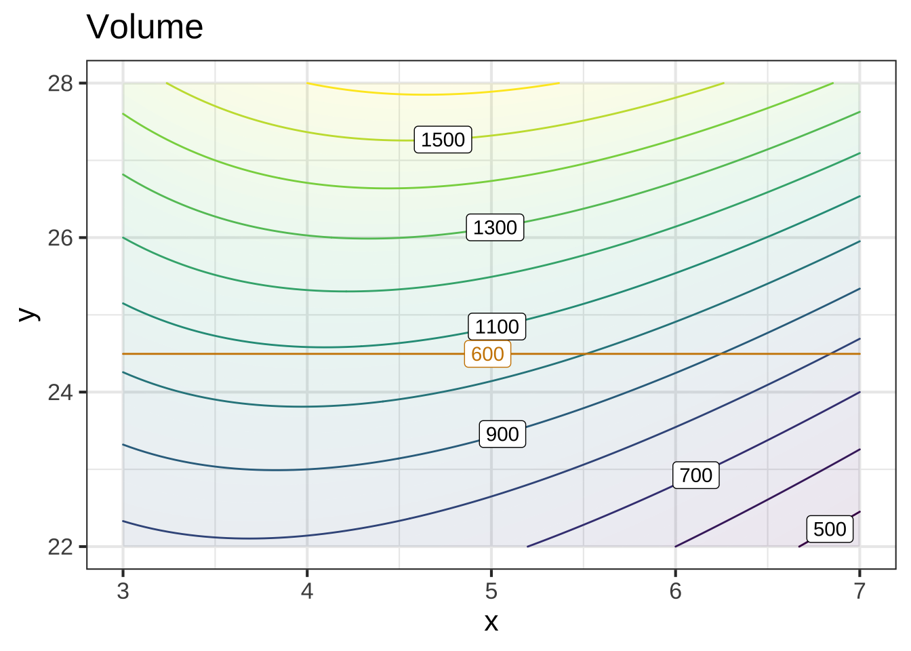
The constraint path is the contour of the constraint function at which the output of the constraint function is the set level; here that’s 600 square-inches of cardboard.
The argmax in this problem is the point at which the constraint path is tangent to a contour of the objective function. Here, we need to interpolate visually and imagine the contour where the objective function output is about 1100, which will be tangent to the constraint path at about \(x=4.2\). 5000
Let’s take the graphic apart into it’s constituent components: the objective function and the constraint function. We’ll plot both in the same way: a contour plot with the gradient field superimposed.
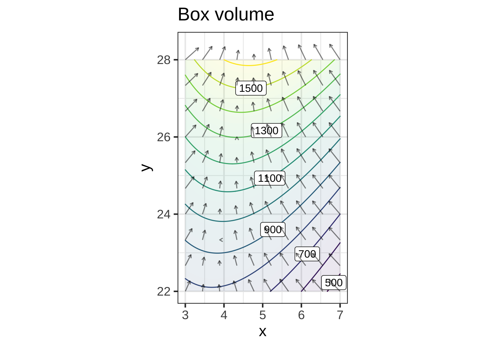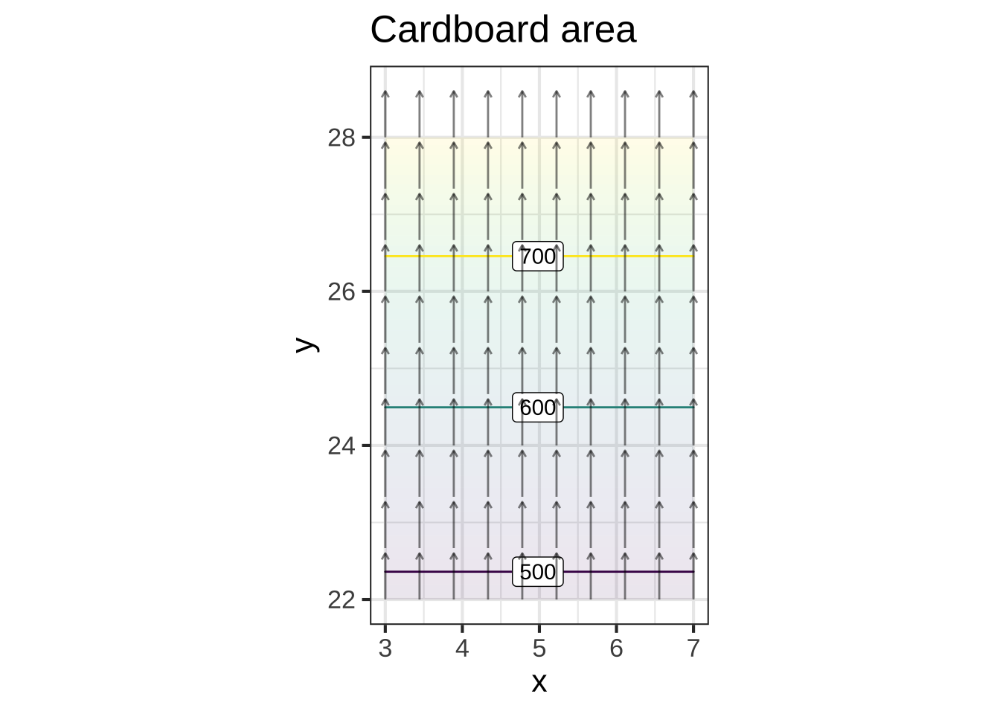
As always, at any point the gradient vector is perpendicular to the contour through that point. This means that wherever the contour of one function is tangent to the contour of the other function, their respective gradient vectors are exactly aligned. 5005
The next plot shows the gradient vectors of each function along with the angle (in degrees) between the gradient vectors at each point. Along the green line, the gradient vectors are exactly aligned. 5010
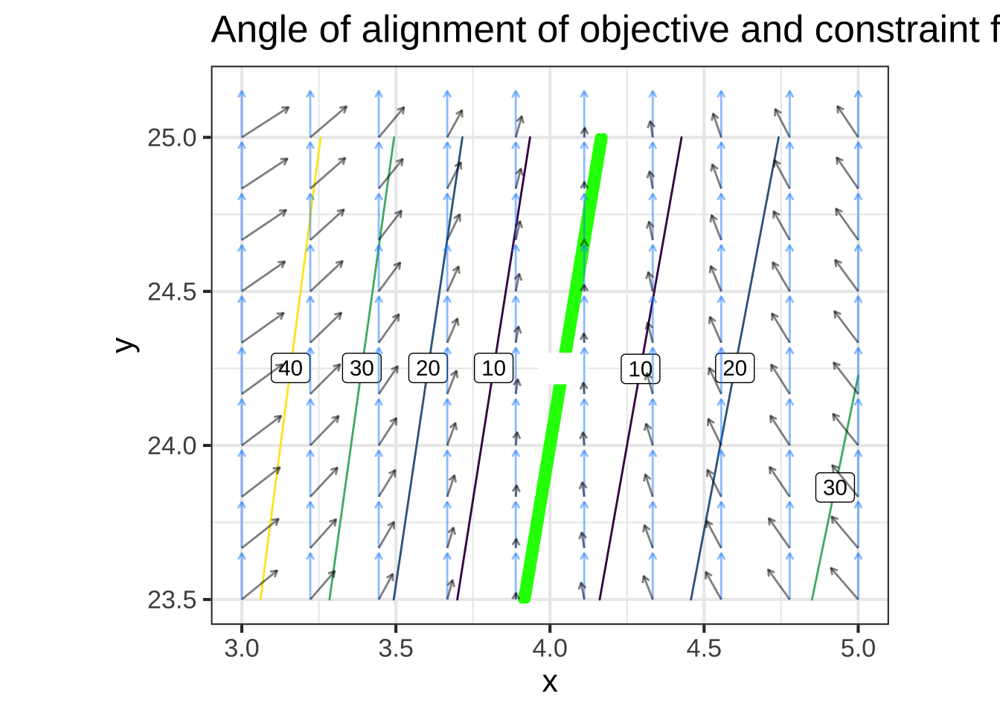
Note that nowhere in the construction of the green line have we said anything about which of the two functions is the objective and which is the constraint. The two functions are used in exactly the same way: find the gradient and find the points where the two functions’ gradients are aligned. It doesn’t matter which function we choose to call the contraint and which the gradient. 5015
Each point on the green line is an input \((x, y)\) that is optimal at some level of the constraint. Imagine taking points on the green line and, for each point, calculating the box volume and the box surface area. These points are each on the Pareto frontier of the multi-objective optimization problem. That is, there are no values of \(x\) and \(y\) off the green line that dominate a point on the green line in terms of the values of the box volume and the box area. 5020
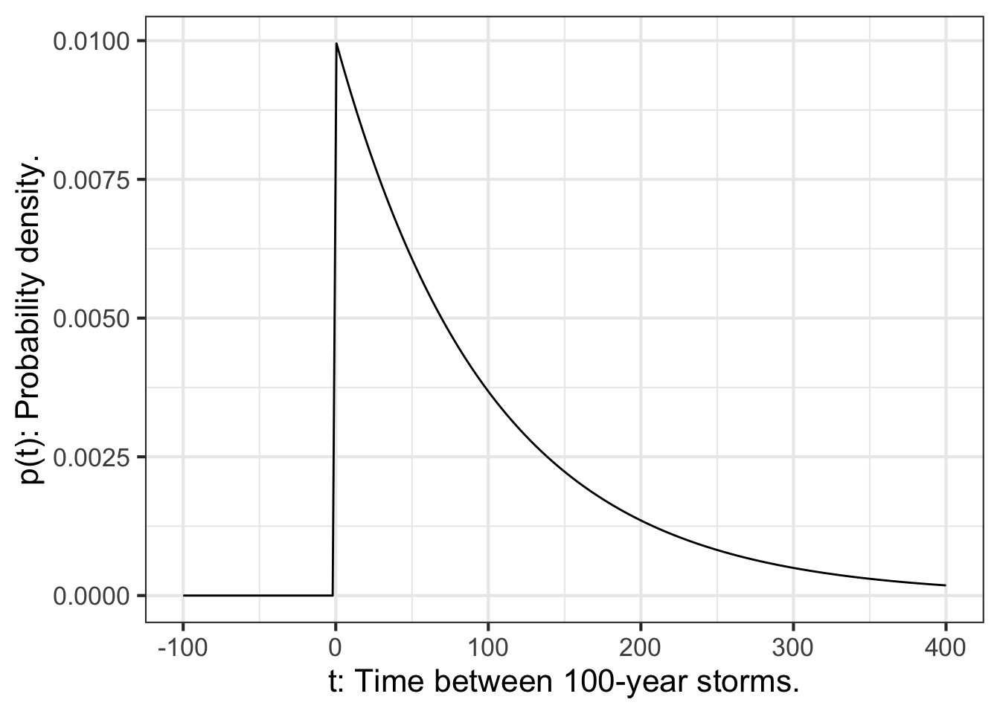
Question H The two graphs showing the green line are labeled “Angle of alignment …” and “Pareto frontier …” respectively. The green line in both graphs represents the same set of \(x, y\) points. But the graphs are different. Why?
- The domain in “Angle …” is the inputs \((x,y)\) to the objective functions, whereas the domain in “Pareto …” is the outputs from those objective functions.Correct.
- The domain in “Pareto …” is the inputs \((x,y)\) to the objective functions, whereas the domain in “Angle …” is the outputs from those objective functions.︎✘
- The “Angle …” graph shows only the constraint function while the “Pareto …” graph shows only the objective function.︎✘
- The “Angle …” graph shows only the constraint function while the “Pareto …” graph shows both the constraint and objective functions.︎✘
Question I Recall that the shadow price (a.k.a. Lagrange multiplier) is a ratio: the extent to which the output of the objective function is increased compared to the extent to which the constraint level is increased. Which of these numerical values is approximately the shadow price of volume with respect to area? (Hint: The above graph gives all the information you need!)
2.4\(\heartsuit\ \) 24︎✘ 240︎✘ 2400︎✘
Question J What’s the shadow price of area with respect to volume? (Before we asked about volume with respect to area.)
0.042︎✘ 0.42\(\heartsuit\ \) 4.2︎✘ 42︎✘
Question K We made a rookie error in posing the two previous questions. The shadow price is a quantity and we didn’t say what the units of that quantity are! So any of the candidate answers to those questions might be right depending on what unit you take the shadow price to be in. (You might have to make up your own unit for this to be exactly right.) We apologize for the mistake and will earnestly try to do better in the future! For now, we’ll ask you to figure it out: Given the units shown on the graph, in what units are the shadow price of volume with respect to area?
inches\(\heartsuit\ \) square-inches︎✘ cubic-inches︎✘ 1/inches︎✘
An application to machine learning: Large chunks of the field of machine learning consist of relating some outcome to be predicted as a function inputs that can be measured. A discrete example: predict what animal is depicted in a photograph as a function of the million-or-so pixel values. A continuous example: Find the probability of a person getting a disease as a function of measurements of expression level of each of thousands of genes. 5025
In both cases, a starting point is the collection of a large amount of data, e.g. photographs with various animals in them that have been labeled by some expert; or genetic measurements from people who did and did not come down with the disease. In both cases, the outcome of machine learning is a function that gives an output (which animal? came down with disease?) as a function of the inputs. 5030
One objective in finding the function is to make the results as close as possible to the data: the function should give the right answer as often as possible. But there is another objective: keep the model simple. The optimal model choice involves a trade-off between these two objectives. Techniques for model construction in machine learning therefore involve two objective functions: the probability of a correct output and the complexity of the model (as measured, for instance, by the length of the \(\mathbf x\) vector found when solving the linear combination target problem). In statistics, this is called the trade-off between variance (how close the model is to the data) and bias (how far the \(\mathbf x\) vector is from the one we would get by ignoring the objective to keep the model as simple as possible). 5035
29.8 Commensurate and incommensurate
Just as the word “cooperate” means to “work together” (“co” + “operate”), the word “commensurate” means to “measure together” or to measure in the same way. Since you already know about different units and dimensions, an example in that domain can make the meaning concrete. An inch and a mile are commensurate quantities. Obviously, an inch and a mile are not equal, but you can compare them in an objective way. (An inch is 0.000015783 miles.) Similarly, a litre and a gallon are commensurate, but having the dimension L3, neither is commensurate with a quantity of dimension L.
A large number of decisions involve money in some way. It’s routine to decide whether a purchase is “worth the money.” But we do this by applying a judgment that is subjective, e.g. is it worthwhile to buy the more expensive chocolate? The decision involves comparing two incommensurate things: the money vs the good feelings that come from eating or giving a fine treat.
That things are incommensurate does not at all mean that you can’t make decisions that put one against the other, just that there is no ready, objective means to do the comparison.
As an example of how incommensurability can frustrate decision making … In the 1990s the Federal Aviation Administration (FAA) was considering a policy of requiring safety seats for infants and children on flying. (For infants, the standard was “babe in arms”: the infant could be carried on the plane and held by the caretaker, without needing a separate seat for the baby.) As you might expect, the issue was the extra costs for parents versus the increased safety of the child safety seat. The American College of Pediatrics lobbied in favor of the safety seats, travel agents lobbied against the requirement. The FAA could not reach a decision. That’s somewhat surprising because the FAA necessarily makes decisions that compare money and safety, for instance in the requirements for a passenger evacuation system or life rafts. I guess nobody is objective about babies!
After a decade or so, the FAA decided not to require the safety seats. What broke the log-jam of incommensurability was a study done of how parents would respond to the increase in cost of flying with babies. It was determined that the increased cost would push parents to drive rather than fly for short- or mid-distance trips. Driving is much more dangerous than commercial aviation and so the expected number of injuries or deaths would be larger were the safety-seat requirement instituted than if not. In other words, the comparison of lives to lives (driving risk versus flying risk) was easy, but the comparison of baby lives to money was impossible.
Over the next few classes, you will learn some mathematical techniques for decision-making in the face of incommensurate objectives (e.g. save money versus save lives). It’s important to note that there is no mathematical solution to the problem. Rather, mathematics can provide tools to clarify the trade-offs and, in much the same way as the resolution of the FAA’s policy problem, can sometimes offer a sensible way forward.
It’s worth mentioning some of the common, non-mathematical ways that people deal with incommensurates. I’ll call these “heuristics.” The Wikipedia definition of “heuristic” is pretty good:
[A]ny approach to problem solving … that employs a practical method that is not guaranteed to be optimal, perfect, or rational, but is nevertheless sufficient for reaching an immediate, short-term goal or approximation. Where finding an optimal solution is impossible or impractical, heuristic methods can be used to speed up the process of finding a satisfactory solution. Heuristics can be mental shortcuts that ease the cognitive load of making a decision.
A very common heuristic is to simply deny that any trade-off exists. This is seen most clearly in the dispute about climate change. The trade-off here is the cost of climate remediation policies (such as a carbon tax) versus the disruption and dislocation caused by the changing climate. One one side of the debate are people who deny that climate change is happening or that it is caused by human activity that can be mitigated. On the other side of the debate are people who insist that the economic changes called for will not only reduce climate-change harm but will positively affect the economy, create jobs, etc. The rest of us are in the middle, recognizing both sides of the problem.
Another heuristic is to play the trump cards of morality and human rights. Once someone claims the the issue is fundamentally one of morality, it’s hard to have conversation about the trade-offs involved. (If everyone agreed about morality, it would be easier. But one person’s divine truth is another person’s opinion.) In the US, the debate about health-care policy is not a measured discussion of how available resources should be distributed to best effect but a competition between perceived moral or ethical stances: “the government has no business making medical decisions for me” versus “affordable health care is a human right.”
It is not our place in CalcZ to enter into deep conversation about political or moral philosophy. Rather, by introducing the concepts of incommensurability and heuristic, we intend to guide the mathematical discussion toward a framework for making impossible decisions in a thoughtful and responsible manner.
29.9 Multiple objectives
It often happens that decisions involve multiple simultaneous objectives. In one context or another, each of these considerations can play a role in decision making:
- safety
- cost
- human life
- animal welfare
- collateral damage
- public or political reaction
This is by no means an exclusive list.
In specialized domains more specific competing objectives are often part of the design goal. For instance, consider aircraft design:
- range
- payload or cargo capacity
- short take-off and landing
- maneuverability
- mission suitability
- multi-mission capability
- maintenability
- stealth
Over the next few lessons, we’re going to introduce concepts that are important to effective thinking about designing with multiple objectives as well as mathematical tools that help in balancing conflicting objectives. As you will see, there is no single “correct” or “best” solution to such problems. Indeed, there is a mathematical theorem about when there cannot be a best solution. However—and this may seem contractictory at first—some solutions are better than others. Mathematics also provides a framework for a systematic and documentable process which provides a role for the inevitable elements of human, subjective values.
First, we’ll cover elementary mathematical principles that demonstrate both that there is no single “best” solution while yet allowing some solutions to be better than others. Important vocabulary here includes “incommensuate”, dominating and non-dominating solutions(along with pareto optimality), decision frontier, and social utility function.
Second, we’ll briefly discuss some heuristics that people and groups often use, without necessarily realizing it, in solving multi-objective optimization problems. Awareness of such heuristics helps in identifying (often unstated) objectives implicit in the decision and enables you, by making them explicit, to clarify the problem and potentially open it up to useful discussion and negotiation.
Later, we’ll use the mathematics of constraints and constraint functions to support a process of rational decision making that nonetheless leaves space for subjectivity in valuing outcomes.
29.10 Yours and mine
We start with a simple, everyday situation that illustrates many basic principles. Here’s a heads up: People are so adept at applying heuristics to this sort of problem—perhaps because it is so common—that it can be difficult at first to see that there is actually a difficulty involved.
The situation is this: there is a pot of money that you and I are going to split up. You and I have similar objectives. For each of us, getting more money is better than getting less. And our objectives conflict. If you get more, I get less. The concepts we’ll introduce apply equally well when there are three, four, or any number of people splitting the pot.
For simplicity and for generalizability to other, less obvious situations, we’ll imagine that we need to choose between several discrete policy alternatives, that is, configurations of the split. “Policy” may seem like a high-fallutin word to use for splitting the pot, but in other situations it can be exactly the right word. Moreover, the etymology of the word is right on target for the problem. A contemporary dictionary definition of “policy” is:
Policy: a course or principle of action adopted or proposed by a government, party, business, or individual
The root of the word is “city” in Greek, “polis” (πόλις—you can recognize the \(\pi\) at the beginning of the word and the “lambda” (\(\lambda\)) in the middle. The last letter is “sigma” (\(\sigma\)) although you might not recognize it since a somewhat different form is used when the letter is at the end of a word.) From “polis” comes our words “politics,” “policy,” and “police,” all of which have to do with relations among people.
For reference, here is a graph showing some policy alternatives in the yours-and-mine problem.
 For example, in policy alternative A, I would get $50 and you would get $25. Under policy F, I get $38 and you get $47. (We’ll get to the blue line in a bit.)
For example, in policy alternative A, I would get $50 and you would get $25. Under policy F, I get $38 and you get $47. (We’ll get to the blue line in a bit.)
A dominated solution is one which both you and I would turn down in favor of a specific alternative (called the dominating solution). For instance, C dominates G: we’re both better off under C than G.
Question L Which solution dominates F?
A︎✘ I would be better off under A, but you would be worse off than under F. B︎✘ C\(\heartsuit\ \) D︎✘ E︎✘
Question M Which solutions dominate G?
BCDF\(\heartsuit\ \) CDF︎✘ ACD︎✘ CB︎✘
Question N Which solutions dominate E?
C︎✘ CDF︎✘ CD︎✘ None\(\heartsuit\ \)
Question O Which solutions dominate B?
C\(\heartsuit\ \) CDF︎✘ CD︎✘ None︎✘
A mathematical, but not psychological, principle is that a dominated solution is never optimal. So, we can rule out any dominated solution.
Question P Which solutions can be ruled out as dominated by some other solution?
BFG\(\heartsuit\ \) BG︎✘ ABFG︎✘ AFG︎✘
An important heuristic for making a decision is fairness. In this case, fairness might be interpreted as “split the pot as evenly as possible.”
The diagonal line shows exactly even splits: you and I each get the same amount. There is no policy alternative that is exactly even, but D is the closest. So many people will claim that D is the best of all the policy alternatives, that other alternatives are “greedy” or “unethical.”
Fairness is a very attractive property of a selected policy solution, but it’s relatively easy to see that fairness is not essential.
Question Q Suppose that policy alternative D does not exist. Of the other policy alternatives, which is the fairest?
A︎✘ C︎✘ F\(\heartsuit\ \)
Question R Suppose that policy alternative D does not exist. Does any policy alternative dominate the fairest solution?
- Yes, A︎✘
- Yes, CExcellent! So we both would prefer C to F. That means that F is not the optimal solution for either of us.
- No︎✘
The answers to the previous two questions point to the reasoning behind calling “fairness” a heuristic rather than a coherent basis for policy choice. To make fairness coherent, we would have to change the rule, “Be fair!” to one like, “If there’s a fairer, non-dominated solution, go for that.”
Another heuristic is can be applied if it’s possible to average between policy alternatives. Imagine if we were making the decision not just for one payout, but for many payouts in series. We might agree to pick solution D most of the time but every once in a while pick solution A to let me catch up with you.
The blue line shows the non-dominated solutions when such averaging is available. This set of non-dominated solutions is sometimes called the solution frontier. Notice that solution E, which is not dominated by any other solution, is dominated by an average between A and F.
Still other heuristics are available. Under compensation, we could agree to a choice that enables one of us to pay the other in order to balance out the take. The trajectory of a compensatory solution is along the lines of slope -1 from the non-dominated solutions.
Question S One of the following is the best solution when compensation is possible. Which one?
A︎✘ C\(\heartsuit\ \)Since both parties will walk away with more money than D D︎✘
In some settings, for instance the “economic theory of law,” the best solution under compensation is also the right choice even if compensation is not paid.
29.11 Follow the gradient!
The big contribution of calculus to the process of optimization is the gradient vector. The gradient vector, as you know, points in the steepest direction uphill. Since functions can have complicated shapes, the gradient does not generally point directly to the maximum. However, if you start at a point and take a small step in the direction of the gradient, the value of the objective function will increase. Then repeat the process and keep repeating until the gradient has zero length (or close to zero).
The sandbox has instructions in R for
- generating a function \(f(x, y)\)
- finding the \(x\)- and \(y\)-components of the gradient vector
- setting up differential equations whose dynamics are “velocity is the gradient.” (Remember, velocity is a vector, as is the gradient.) This system just walks uphill.
- setting up differential equations whose dynamics are “velocity is negative the gradient.”
- plotting the \(f(x,y)\), the gradient field, and the two solutions to the differential equations.
f <<- rfun( ~ x + y, seed=103)
dx_f <<- D(f(x, y) ~ x)
dy_f <<- D(f(x, y) ~ y)
soln1 <- integrateODE(dx ~ dx_f(x=x, y=y),
dy ~ dy_f(x=x, y=y),
x = 1, y = -3,
tdur = list(from=0, to=10, dt=0.1))
soln2 <- integrateODE(dx ~ -dx_f(x=x, y=y),
dy ~ -dy_f(x=x, y=y),
x = -2, y = 0.75,
tdur = list(from=0, to=10, dt=0.1))
contour_plot(f(x, y) ~ x + y, domain(x=c(-5, 5), y=c(-5, 5))) %>%
gradient_plot(f(x, y) ~ x + y) %>%
traj_plot(y(t) ~ x(t), soln1, color="dodgerblue") %>%
traj_plot(y(t) ~ x(t), soln2, color="orange3")
Question T The two trajectories are shown in blue and red respectively. Each starts at the point labelled “0” and ends at the point labelled “10”. How does movement along each trajectory correspond to the gradient field?
red uphill, blue downhill︎✘ red downhill, blue uphill\(\heartsuit\ \) both downhill︎✘ both uphill︎✘
Question U Did the trajectories reach a local maximum or minimum?
- red reached max, blue reached min︎✘
- red reached min, blue reached maxExcellent!
- both reached max︎✘
- both reached min︎✘
Question V There’s a local minimum shown on the graph at about \((x=0, y=-1)\). Neither of the trajectories reached this minimum. Imagine starting a new trajectory at a point \((x=2, y=0)\). Will it reach the local minimum near \((x=0, y=-1)\)?
- Yes, so long as you walk against the gradient.Nice!
- Yes, so long as you walk along the gradient.︎✘
- No︎✘
In the code originally in the sandbox, the trajectory was constructed with 100 Euler steps; the time interval runs from \(t=0\) to \(t=10\) and \(dt = 0.1\). Practical optimization algorithms are designed to take steps that are as large as feasible. But if the steps are too large, the trajectory can overshoot the target. Dealing with this problem is a major feature of optimization algorithms and is non-trivial.
Purely to illustrate, we can investigate stepsize by changing dt in the two integrateODE() expressions.
Question W What happens when you set dt=1.0?
- Both trajectories smoothly curve around and reach the maximum or minimum.︎✘
- The trajectories reach the maximum or minimum, but in a clunky, jerkwise fashion.Correct.
- The trajectories oscillate around the maximum or minimum without settling down.︎✘
- Everything falls apart and the trajectories leave the domain of interest.︎✘
Question X What happens when you set dt=10.0?
- Both trajectories smoothly curve around and reach the maximum or minimum.︎✘
- The trajectories reach the maximum or minimum, but in a clunky, jerkwise fashion.︎✘
- The trajectories oscillate around the maximum or minimum without settling down.︎✘
- Everything falls apart and the trajectories leave the domain of interest.Excellent!
29.11.1 More about QALY’s: Exercise??
The optimization techniques described above are completely realistic, but it’s not so realistic to have specific formulas for the relationship between expenditures and outcomes. Somewhat more realistically, you might have the opinions of experts about the outcomes, in the form of a table like this.
| Expenditure | 0 | 10 | 20 | 30 | 40 | 50 |
|---|---|---|---|---|---|---|
| A | 0 | 4 | 10 | 15 | 18 | 24 |
| B | 0 | 3 | 8 | 19 | 25 | 30 |
| C | 0 | 6 | 12 | 18 | 26 | 31 |
Such estimates from experts should be taken with a grain of salt, but they are often the best information you have to inform a model.
You can turn the expert’s opinions into functions by using splines. In this case, there is good reason to think that output will increase monotonically with expenditure, so a monotonic spline is a good choice. You can construct the functions like this:
expend=c(0,10,20,30,40,50)
A = c(0,4,10,15,18,24)
B = c(0,3,8,19,25,30)
C = c(0,6,12,18,26,31)
dat = data.frame(expend=expend,A=A,B=B,C=C)
fA = spliner( A ~ expend, data=dat, monotonic=TRUE)
fB = spliner( B ~ expend, data=dat, monotonic=TRUE)
fC = spliner( C ~ expend, data=dat, monotonic=TRUE)- Find the best values of inputs \(x_A\), \(x_B\), and \(x_C\) given the constraint that total expenditure is \(x_A + x_B + x_C = 50\). Choose the closest answer: a. Input to A: \(x_A\) {0}{0,5,10,15,21,24,30,34,39,43,50} #. Input to B: \(x_B\) {34}{6,11,16,19,25,29,34,41,43,50} #. Input to C: \(x_C\) {16}{7,11,16,19,21,25,29,34,39,41,44}
overall <- makeFun(fA(A) + fB(B) + fC(50-A-B) ~ A & B)
contour_plot(
overall(A, B) ~ A + B,
domain(A=range(0,50), B=range(0,50))) %>%
gf_labs(x = "A (amount)", y = "B (amount)")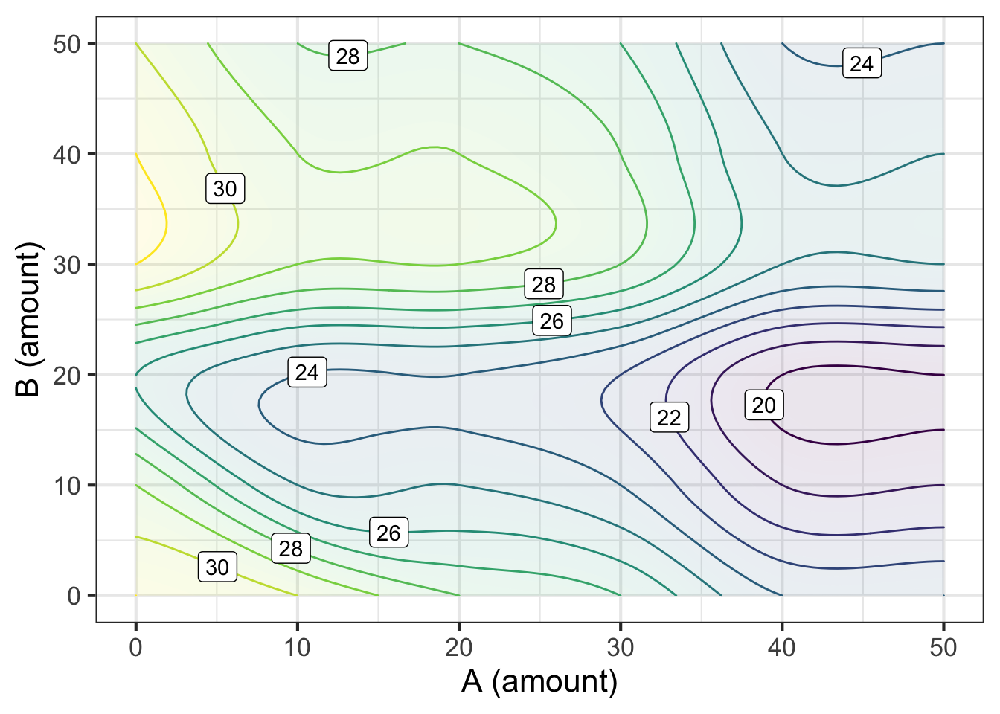
The optimum is near \(x_A=0\), \(x_B=34\) and therefore \(x_C = 50 - 34 - 0 = 16\). This gives an output of about 31.4 units.
overall( A=0, B=34 )## [1] 31.408The American Association of Allergy Activists (AAAA) has lobbied Congress to mandate that, of the 50 units of available funds, funding for A must be at least \(x_A \geq 30\) with only the remaining 20 units of expenditure available to be allocated to B and C.
- How much would this constraint reduce the overall output for the three interventions combined? (Remember, if you’re spending 30 on A, you can’t spend more than 20 on B.)
- Not at all.
- About zero to 1 output unit
- About 4 to 5 output units
- About 10 to 12 output units
- About 14 to 16 output units
- It would actually increase the output.
Looking at the contour plot along the path $x_A = 30$ indicates that the best possible outcome will be about 28 units. This is a reduction of about 3 units from the optimum when $x_A$ is not subject to the proposed Congressional constraint.Good news and bad news. You’ve defeated the AAAA initiative to force expenditure on A. But, regretably, general budget cuts have just been announced! Now there are only 20 units to spend on the three interventions.
- What’s the best mixture?
- Input to A: \(x_A\) {0}{0,5,10,15,20}
- Input to B: \(x_B\) {0}{0,5,10,15,20}
- Input to C: \(x_C\)
- What’s the output that corresponds to the best mixture? {12}{0,3,6,8,12,14,21,29,34,38} The contour plot shows that the maximum occurs when \(x_A=0\) and \(x_B = 0\).
overall <- makeFun(fA(xA) + fB(xB) + fC(20-(xA+xB))~xA&xB)
contour_plot(overall(xA, xB) ~ xA + xB,
domain(xA=range(0,20), xB=range(0,20)))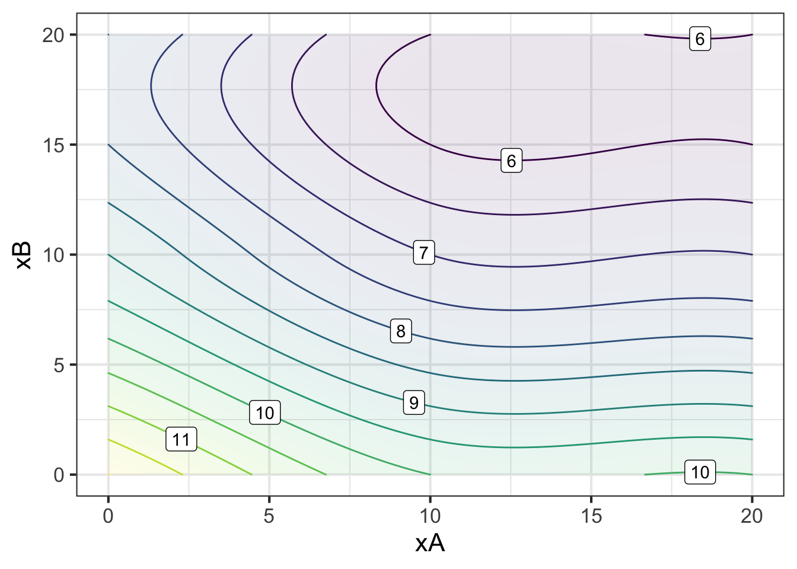
overall( xA=0, xB=0 )## [1] 12